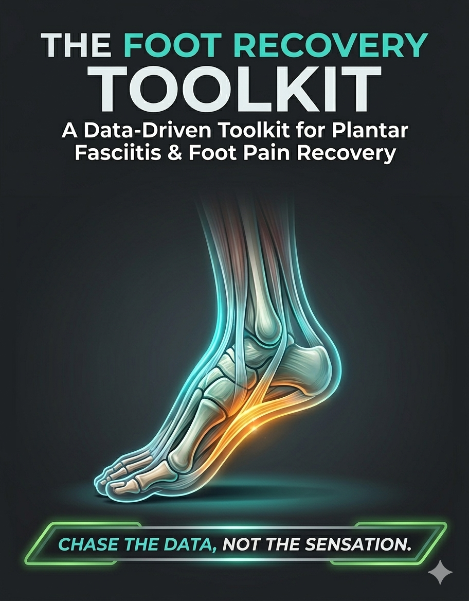

The Foot Recovery Toolkit
A Companion Guide for Tracking, Testing, and Accelerating Your Progress
Table of Contents
- How to Navigate This Book
- 01 — The Operating System Quick-Start Guide & Diagnostic Translator
- 02 — Phase 1: Discovery & Documentation The 7-Day Pain & Activity Log
- 03 — Phase 2: Strategy & Planning 3-Month Monitoring System & Load Distribution Blueprint
- 04 — Phase 3: Building the Foundation Strength Log & Habit Stack Tracker
- 05 — The Clinical Validator Pre/Post Relief Score Tracker
- 06 — Phase 4: Mastery & Elite Function Impact Readiness Checklist & Plyometric Progression
How to Navigate This Book
This toolkit is a non-linear resource. While the Quick-Start Guide and 7-Day Log are your starting point, the Relief Score Tracker should be pulled out any time you buy new shoes or try a new stretch. Think of the 3-Month Dashboard as your high-level GPS, while the Daily Habit Stack is the engine that keeps the car moving.
Most people fail because they treat foot pain as a mystery. This toolkit treats it as a data problem. By using these six tools together, you move from guessing to engineering your own resilience.
01The Operating System
Quick-Start Guide
This page serves as the "Operating System" for your recovery. The toolkit is designed to function as a continuous feedback loop. You are the scientist, and your feet are the laboratory.
The 3-Step Success Loop
- LOG (The Input): Use the 7-Day Pain & Activity Log to capture what happened today.
- ANALYZE (The Insight): Use the Diagnostic Translator (How to Read Your Foot Pain) to identify the "Pattern" and the "Targeted Action."
- ADJUST (The Output): Apply that action to your Weekly Load Distribution Blueprint or Foot Strength Log to fix the issue before it becomes a flare-up.
Your Toolkit at a Glance
How to Start: Your First 7 Days
Do not try to master every log at once. Focus on the foundation first.
- Days 1 to 3: Simply use the 7-Day Pain & Activity Log. Do not change anything yet. Just observe the "Input" (your movement) and the "Output" (your pain).
- Day 4: Use the Diagnostic Translator to look for your "Signature." Are you an "Inflammatory Trap" or a "Morning Stiffness" case?
- Day 7: Use the 3-Month Dashboard to set your first "Baseline." If you can walk 15 minutes with a pain score under 3 out of 10, that is your starting point.
The Golden Rules of the Toolkit
- Trust the Algorithm: If a log tells you to reduce load by 20%, do it. Pain is a signal, not an opponent to be defeated.
- Consistency > Intensity: A 2-minute "Habit Stack" done every single day is 10x more effective than a 60-minute "recovery session" done once a week.
- Form is the Guard: In the Strength Log, a "perfect" rep with zero weight is a win. A "heavy" rep with arch collapse is a loss.
The Diagnostic Translator
How to Use the Diagnostic Translator — How to Read Your Foot Pain
To get the most out of this tool, follow this four-step protocol every time you review your weekly data:
- Identify the Pattern: Look at your 7-Day Activity Log. Do you see a recurring spike in pain at a specific time (e.g., right after waking up or 30 minutes after a walk)?
- Match the Signature: Find the row on this chart that mirrors your experience.
- Validate the "What it Means": Use the middle column to understand the physiological status of your tissue. This removes the "fear of the unknown" and replaces it with clinical context.
- Execute the Targeted Action: This is the most critical step. Do not just observe the data; apply the specific mechanical adjustment listed in the right-hand column.
Decoding Your Scenarios
You feel fine during the walk, but the "bill" arrives 30 minutes later.
You are loading the tissue too frequently. Your body needs more time to clear the inflammatory response. Increase your recovery window by 50% before your next session.
That classic sharp heel pain that transitions into a dull, heavy ache.
This is often a mechanical friction or pressure issue. Audit your surfaces. If you are walking on "Hard Concrete," find a "Soft" grass or track alternative immediately.
The first ten steps out of bed feel like walking on glass.
Your tissue is "locking" overnight. Move before you stand. Spend 2 minutes doing "Towel Scrunches" or ankle circles while still sitting on the edge of the bed to lubricate the fascia before it takes your full body weight.
A "flare-up" that lasts more than 2 hours after you've finished moving.
You have crossed your current tissue tolerance threshold. You don't need to stop, but you must reduce the duration of that specific activity by 20% next time to find your "Safe Loading Zone."
The Golden Rule: Data without action is just noise. If the chart says "-20% Duration," do not try to "tough it out." Trust the algorithm.
02Phase 1: Discovery & Documentation
The 7-Day Pain & Activity Log
Pinpointing triggers and mapping latent inflammatory responses.
The 7-Day Pain & Activity Log is your data collection foundation. Before you can fix a problem, you must understand it. This log helps you identify patterns that might otherwise go unnoticed—like delayed pain responses or activity correlations.
What to Track
- Daily activities and duration (walking, standing, exercise)
- Pain levels throughout the day (morning, midday, evening)
- Surface types (concrete, grass, treadmill, etc.)
- Footwear worn
- Any interventions tried (stretches, ice, tape, etc.)
- Sleep quality and morning stiffness
How to Score Pain
Use a simple 0–10 scale where:
- 0–1: No pain
- 2–3: Mild discomfort, barely noticeable
- 4–5: Moderate pain, affects activities somewhat
- 6–7: Significant pain, limits activities
- 8–10: Severe pain, cannot perform normal activities
Many people with plantar fasciitis experience "latent" pain—discomfort that appears hours after the triggering activity. This is why logging when pain occurs is just as important as logging what you did.

03Phase 2: Strategy & Planning
The 3-Month Monitoring System
The One-Step Rule (How to grow without the "flare-up")
Instead of doing complex math, think of your progress as a volume knob. You are only allowed to turn it "one click" per week.
1. The Simple Rule of Thumb
- Last week: 20 minutes? This week: 22 minutes.
- Last week: 40 minutes? This week: 44 minutes.
- Last week: 60 minutes? This week: 66 minutes.
2. The "If It Feels Too Easy" Test
If you finish your week and feel like you could have done much more, do not add more. The "extra" energy you feel is actually your body successfully repairing itself. If you use up that energy by doing extra miles, you steal the fuel your feet need to finish the healing process.
3. The Three Traffic Lights
Look at your 7-Day Log at the end of the week and pick your color:
Your muscles get stronger in days, but your tendons and fascia (the "cables" in your feet) take weeks to catch up. The One-Step Rule is a "speed limiter" that keeps your ambition from outrunning your actual physical recovery.
12-Week Progressive Loading Schedule
The Path from Baseline to 3x Capacity
This schedule demonstrates the power of compounding. By following the +10% Rule, you can effectively double your capacity over 12 weeks without ever making a drastic jump that risks a flare-up.

The Math of Success: At a 10% increase, you aren't just adding minutes; you are building a resilient biological structure. In 12 weeks, you will be doing nearly 300% of what you could do on Day 1.
Track Your Daily Progress
The schedule tells you what to do, but the Progress Log tells you how you're doing. Daily tracking is essential because:
- Memory is unreliable: You cannot trust your recall of pain levels from three days ago.
- Patterns emerge: Only by logging daily will you spot the connections between activities and pain.
- Motivation builds: Seeing weeks of consistent data proves you are improving, even on days when it doesn't feel like it.
- Adjustments require data: To decide whether to advance to the next week or hold steady, you need objective records.
How to Handle the "Hiccups"
It is rare to have a perfectly linear 12-week run. Life and biology are messy. Use these three "Logic Gates" to stay on track:
If you hit Week 5 and feel a "twinge" (Pain 4/10), do not go to Week 6. Stay at Week 5 (88 minutes) for another 7 days. Once the pain returns to baseline (≤ 3/10), proceed with the 10% increase.
If you experience a significant flare-up (Pain > 5/10 for 48 hours), drop back two weeks. If you were at Week 8, return to Week 6 volume. This allows the tissue to settle while maintaining the "habit" of movement.
If you switch from flat pavement to soft sand or trails, reduce your duration by 30% for that session. The increased mechanical demand of the surface counts toward your "Total Load" even if the minutes are fewer.
The Weekly Load Distribution Blueprint
The Foot Energy Budget (How to spend your movement "money")
Not all steps are equal. Walking on a flat treadmill is "cheap," while walking on soft sand is "expensive." If you spend too much too fast, you get a flare-up.
1. The Expense Categories
Instead of "Intensity Scores," think of your activities by their Cost:
Standing at your desk, shuffling around the house, or wearing your most cushioned shoes.
Rule: You can do these every day. They are "free" movement.
Brisk walking on flat pavement or your standard gym workout.
Rule: These are your "bread and butter." Track these minutes carefully.
Walking on sand, grass, hills, or wearing thin/minimalist shoes.
Rule: These drain your tank fast. Do not do these two days in a row.
2. The 48-Hour Recovery Rule
This is the most important part of the blueprint. If you do a RED (High Cost) activity today, your feet need a "recharge" period.
- The Rule: After a "Hard Day," you must take at least one full day off from hard movement.
- What to do instead: On your recharge day, stick to LOW COST movements only. This allows the tissue to repair the "micro-damage" before you load it again.
3. The "Back-to-Back" Trap
Never stack two RED days together.
- Bad Idea: Sand walking on Saturday + Hill hiking on Sunday. (This is how 90% of flare-ups happen).
- Good Idea: Sand walking on Saturday + Rest/House shuffling on Sunday + Brisk walk on Monday.
- Use your 12-Week Recovery Progress Log to see how many total minutes you have for the week.
- Use this Blueprint to spread those minutes out so you have "Easy Days" between your "Hard Days."
04Phase 3: Building the Foundation
The Progressive Foot Strength Log
Objective Metrics for Intrinsic Muscle Development and Form Priority
Phase 3 is where we shift from "putting out fires" to "fireproofing the building." Your foot contains dozens of tiny intrinsic muscles that act as a natural, internal suspension system. If these muscles are weak, your plantar fascia is forced to do a job it wasn't designed for.
1. The "Quality Over Everything" Mandate
In this log, a repetition only counts if your form is perfect. We prioritize Neuromuscular Control over raw volume.
- The Arch Integrity Check: If your arch collapses or your ankle rolls inward during a movement, that rep is a "No-Count."
- The Big Toe Anchor: Your big toe is your primary stabilizer. If it lifts or "claws" the ground, stop the set and reset your foot position.
2. How to Use Your Strength Log
Don't just check a box. Use the Difficulty Scale (1-10) to guide your next move:
3. The Two-Session Rule
Before you move to a harder version of an exercise, you must record two consecutive sessions in the "Growth Zone" with zero pain the following morning.
The Daily Habit Stack Tracker
Anchoring Micro-Habits into Your Existing Morning and Evening Routines
The most common reason foot recovery fails isn't a bad plan; it's a lack of execution. You don't need "more time" in your schedule; you need to anchor your recovery to habits you already perform every single day.
1. The Science of the "Stack"
A Habit Stack uses an existing "Anchor" (an automatic daily behavior) to trigger your new "Micro-Habit." This bypasses the need for willpower.
2. Your Built-In Anchors
"While the coffee brews, I will do 10 Toe Spreads."
"Every time I sit at my desk, I will do 5 Short Foot ISOs."
"While I brush my teeth, I will do a 60-second Calf Stretch."
3. System Resilience: The Fallback Plan
Life is unpredictable. Your tracker includes a "Fallback" section for high-stress days.
If you are too busy for a full session, do one single rep of your stack.
Why? Because the goal isn't just physical—it's neurological. Doing one rep keeps the "Consistency Chain" alive in your brain. One rep is a victory; zero reps is a break in the system.
4. The Weekly Review Logic
At the end of each week, tally your successful stacks:
- Hit 5/7 Days? Progress to the next level of the strength log.
- Hit <5 Days? The habit is too "heavy." Simplify the task. Reduce your 10 reps to 3. Make the habit so small it is impossible to fail.
05The Clinical Validator
The Pre/Post Relief Score Tracker
Measuring Intervention Efficacy Over a 72-Hour Window
When your feet hurt, you are bombarded with advice: "Try this tape," "Buy these orthotics," "Roll your foot on a frozen water bottle." Without a system, you end up with a closet full of expensive gadgets and no idea what actually works. The Relief Score Tracker is your clinical filter. It turns a "guess" into a "data-point."
1. The 72-Hour Testing Protocol
A single session of relief is not proof of success. Inflammation often has a "latent" or delayed response. To validate an intervention (like a new pair of shoes or a specific taping technique), you must track it through three specific "Nodes":
Node 1 (Immediate)
Did your pain score drop immediately after the intervention?
Node 2 (24 Hours)
Did the pain return to baseline the next morning?
Node 3 (72 Hours)
Is the tissue still calm after three days of normal activity?
2. The Decision Guide (Adopt, Modify, or Abandon)
Once you have your 72-hour data, use the "Traffic Light" logic to decide the future of that intervention:
Pain decreased immediately AND stayed low for 72 hours. This is a "Keeper."
You felt immediate relief, but experienced a "flare" at 24 hours. The intervention works, but the intensity or tension (e.g., how tight the tape is) needs to be reduced.
No immediate change in pain or, worse, increased pain at the 72-hour mark. This intervention is a "mismatch" for your current tissue tolerance. Stop using it and move to the next.
06Phase 4: Mastery & Elite Function
The Impact Readiness Checklist
The "Pre-Flight" Check for Running and Jumping
Phase 4 is the bridge between "walking without pain" and "returning to sport." Most re-injuries happen because people start running based on a date on the calendar rather than data in their logbook. This checklist is your objective green light.
The Four Pillars of Readiness
Before you attempt a single "Impact" rep (running or jumping), you must be able to check "YES" to all four:
Can you walk for 30 minutes on flat pavement with a pain score of 0/10?
Have you had 7 consecutive days with zero "first-step" morning stiffness?
Can you stand on your affected leg for 30 seconds without losing balance or arch collapse?
Can you perform 15 slow, controlled single-leg calf raises with perfect form?
The Plyometric Progression Scale
A 5-Stage Ladder for Rebuilding Tendon Elasticity and "Spring"
Tendons are like springs. After an injury, they lose their "elastic recoil." This scale safely retrains your fascia to handle the high-velocity loads of running.
The ISO-Hold
Holding a "Mid-Range" calf raise for 30 seconds. No movement, just tension.
The Controlled Eccentric
Raising up with two feet, and lowering down slowly (3–5 seconds) with just the affected foot.
The Pogo Hop
Small, rhythmic hops in place (staying on the balls of your feet). The goal is "stiffness," not height.
The Directional Shift
Moving from vertical hops to side-to-side "Skater" hops.
The Return to Run
Integrating short intervals (e.g., 1 minute run / 2 minutes walk).
Final Thoughts
Remember: Recovery is not linear. There will be setbacks, "hiccups," and days when your feet don't cooperate. The difference between those who succeed and those who stay stuck is simple: data-driven adaptation.
Trust the process. Trust your logs. Trust yourself.